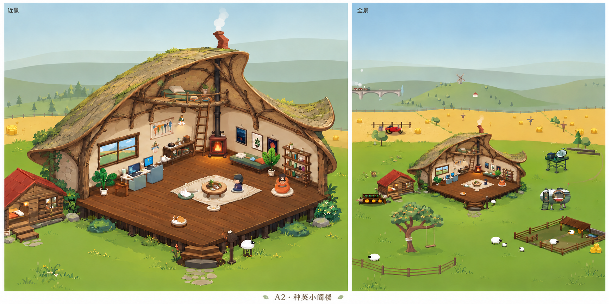
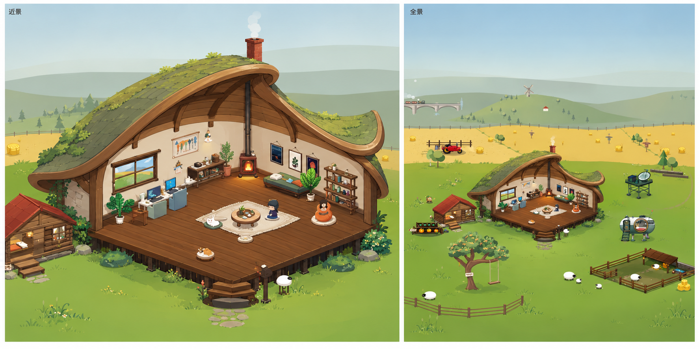
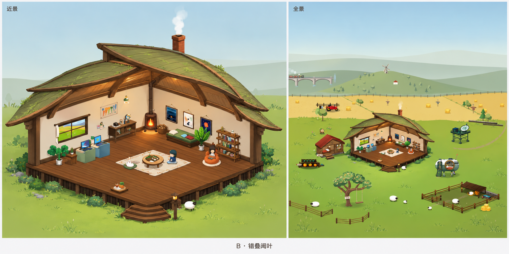
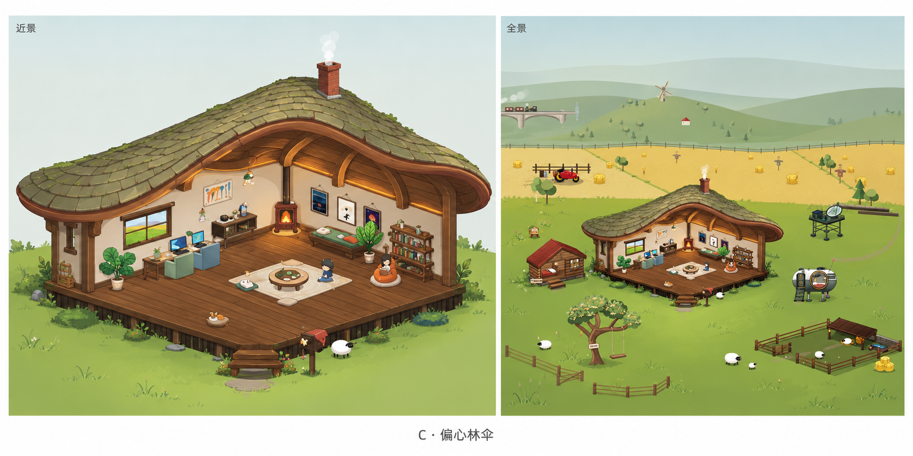
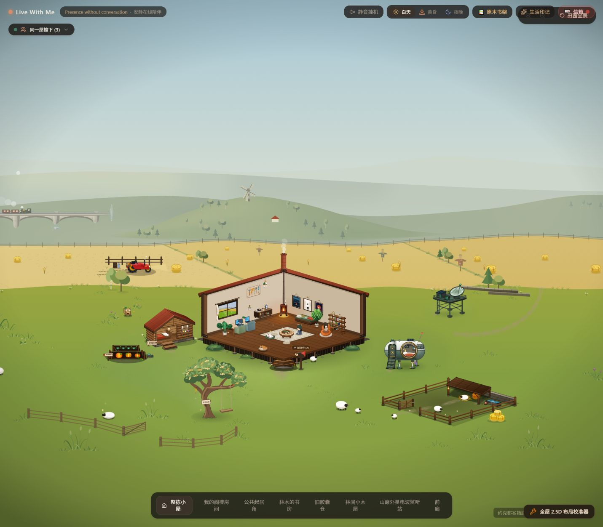

A2 · 原枝薄壳与小阅读阁楼
收薄檐边，保留枝干的弯曲、分叉与树结；灰金色外壳呼应麦田，浅橄榄与苔面接住草甸颜色。弯曲陶砖烟囱增加手作感。高处的小平台只容纳阅读软垫、靠枕与少量书，一楼仍是主要生活空间。

点击查看原图。梯子已从窗边移至后侧；真实净空、通行、烟管间距和完整屋面覆盖尚待模型验证。详细评审 · 本轮提示词
A · 不对称种荚壳
优先候选。大小两片屋壳形成包裹，厚木边和暖内衬让屋顶可读。右侧卷尖需要收敛，后墙交角处的高点仍需偏移，避免舞台拱顶感。

点击图片查看原图。形态成立的部分：两侧不等大、屋面厚度、内部暖木；不将重绘家具和额外绿植作为实施内容。
B · 错叠阔叶
叶片搭接最明确，中央活动区保持开放。当前仍有传统双坡屋的轮廓，屋面层片也偏多；若选此方向，需要收为三片主叶面并强化偏心。

更轻、更有植物结构感，但需防止看起来只是普通房子盖了几片叶子。
C · 偏心林伞
连续厚檐与下方内衬的庇护感最强。当前屋顶也最厚重，偏心不够突出；若选此方向，需要减薄前檐、释放窗侧视线，取消生成图自行加入的连续光带。

完整屋面感清楚，但需要控制大帽子对生活空间的压迫感。
F2 原场景
本轮参照图。屋顶目前主要由窄檐表达；保留这一版的地板、人物原画与生活功能，后续只把选定的建筑形态转为可控几何。
